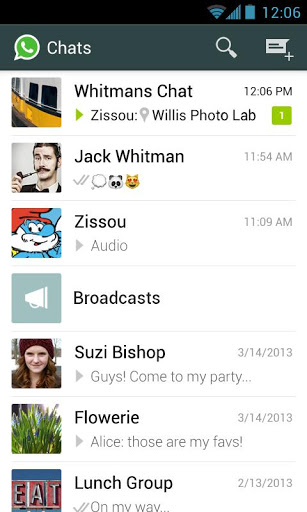
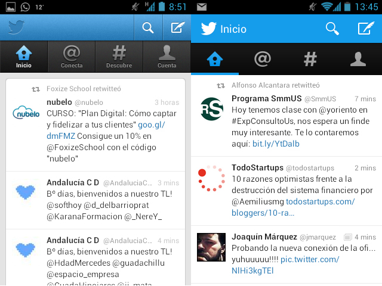
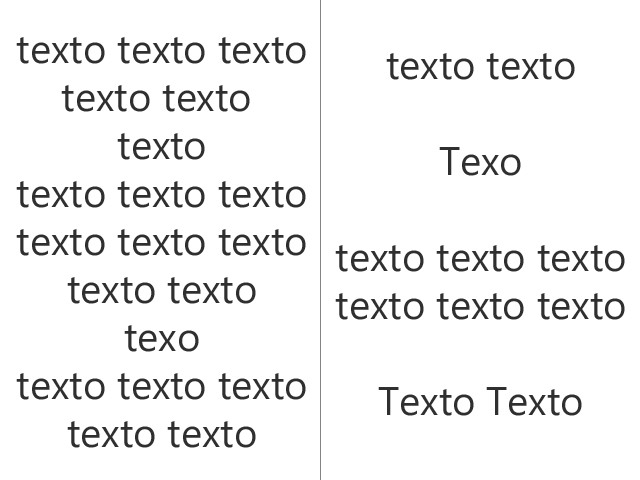
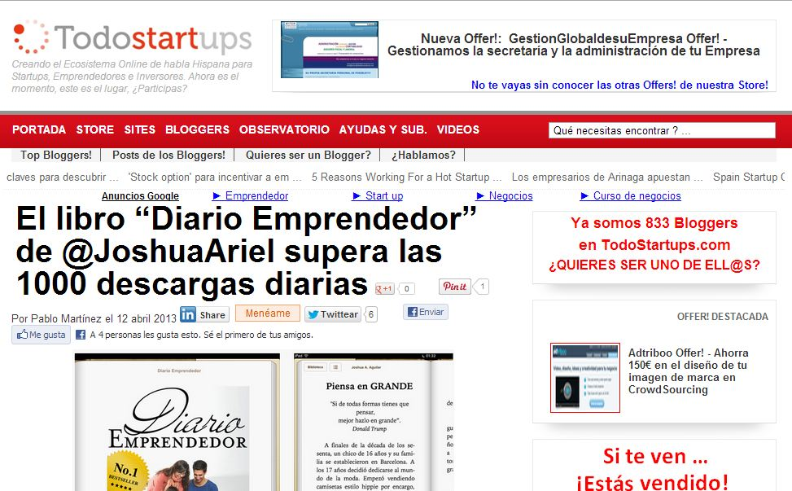

Make it simple ;)
Según el libro Web Design and Mobile Trends for 2013, en este año, el avance de la web va a estar orientado en torno a tres puntos claves. Resumiendo podemos decir que la web evolucionará hacía una mejora en dispositivos móviles, la aplicación de nuevas tecnologías (SVG, adaptación a altos PPI, webGL...) y la simplicidad.
La simplicidad es un bonito término. Según la RAE:
Sencillez, candor
Cualidad de ser simple, sin composición. Para mi es un arte, es reducir una tarea o actividad a un mínimo atractivo para el usuario y a la vez totalmente funcional. Dejamos atrás decoraciones recargadas que pueden confundir al usuario y buscamos esa sencillez que hace que con menos de tres clicks y 10 minutos de aprendizaje, un usuario sea capaz de sacar buen provecho de nuestra web o aplicación.
Sencillo vs complejo
Siempre debemos de tener en mente el objetivo de nuestra web o proyecto. Generalizar nunca funciona. No es lo mismo desarrollar una aplicación móvil gestor de emails, que una para promocionar y fidelizar a usuarios de una marca.
Una aplicación de emails casi siempre requerirá un uso más serio, no buscamos que nos impresione, buscamos que nos facilite una tarea. En cambio una aplicación de una marca buscamos que nos alaben y que nos impresionen de alguna manera.
La sencillez depende del ámbito, los objetivos y los usuarios y el estado al que vayan dirigido. Con estado me refiero a la situación del entorno en la que el usuario la utilizará.
Make it simple ;)
Ahora llegamos a la parte más práctica. Después de un: "Me parece bien la idea, pero... ¿cómo lo agrego a mis proyectos?", vamos a intentar responder a esta pregunta.
Lo primero son los objetivos
Lo primero es centrar nuestros esfuerzos en el objetivo principal de la aplicación o web. Pensemos cuál es el problema o la tarea a realizar en su esencia.
Podemos poner el ejemplo de WhatsApp: queremos mandar mensajes gratuitos y ¿cuál es la mejor forma?, un chat en el que conversar de manera directa con nuestros usuarios de manera individual o por grupos. Por ello tenemos una interfaz limpia con nuestros grupos o usuarios, de manera que con un solo click podemos hablar con nuestros contactos más frecuentes:

Interfaz de inicio de la aplicación WhatsApp
Plano, plano, plano
Centrándonos en aplicaciones donde es importante el contenido textual (casi todas), un buen contraste y un fondo plano favorecen la lectura del usuario.
Solo hace falta dar un vistazo a las últimas actualizaciones de aplicaciones como WhatsApp, Skype o Twitter. Este año predominan los colores planos, nada de degradados y mucho menos, fondos texturizados. ¿Por qué? Volvemos a la simpleza, a un centrado en los objetivos de la aplicación.

Vuelvo a referirme a una frase que me dijo una amiga:
"El silencio en la música es el espacio en los diseños, y es necesario" (@madhatter_Lady).
Necesitamos espacios para organizar y jerarquizar la información dentro de una aplicación.
Vamos a poner un ejemplo práctico, mirad las siguientes imágenes:

Textos con distintos espacios
¿Qué os inspira cada una? La de la izquierda seguro que monotonía y agobio. La de la derecha nos da una jerarquía, algo que destacar solo con espacios, sin entrar en tipografías. Probablemente ni os hayáis dado cuenta de que en la imagen de la izquierda está mal escrita la palabra Texto casi al final, en la de la derecha lo habréis visto al primer vistazo.
Nunca debemos de agobiar a nuestros usuarios, debemos de darle su espacio dentro de una web o de una aplicación. Aquí tenéis un ejemplo de qué NO hacer:

Cabecera de la web TodoStartups.com
No hay ningún espacio entre el título y los anuncios ni la parte social. tampoco con el comienzo del artículo. El usuario en esta web no establece una jerarquía, interpreta demasiado contenido en muy poco espacio generando una mala experiencia de lectura.
Otra práctica que pienso que se debería de eliminar de TODO blog es agregar una capa social fija al artículo. Recuerdas al usuario constantemente que debe de compartir, que es tu objetivo, y no el proporcionar contenido de calidad.
This is simple :O
Partiendo de estas tres reglas podemos desarrollar nuestros proyectos de una manera simple y atractiva al usuario. Debemos de pensar que simple también significa fácil y rápido de manejar, y que hoy en día, cada vez tenemos menos tiempo para utilizar aplicaciones o navegar por webs.
Make it simple! :)